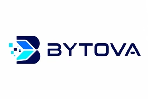
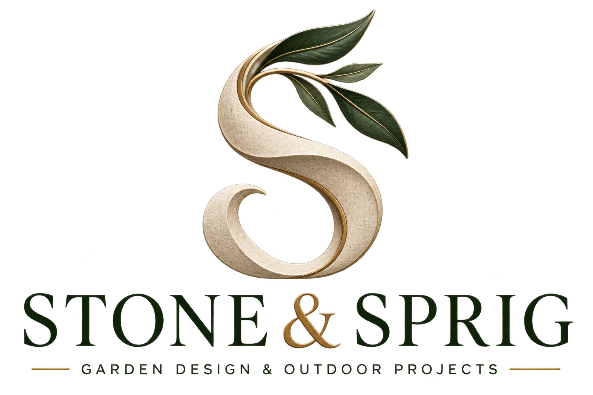

TECHNOLOGY & SMALL BUSINESS
Everyday tech, made easier.
Friendly computer support, practical repairs and websites for small businesses.
INDEPENDENT THINKING. PRACTICAL BUILDING.
I’m Leighton — a Computing & IT student and independent business owner, connecting technology, hands-on projects and a love for the natural world.
01 / THE PERSON BEHIND THE PROJECTS
I like understanding how things work — then finding a useful way to put that knowledge into practice.
That interest takes me in different directions: helping someone with their technology, bringing a classic console back into play, thinking about a garden, or exploring what an AI assistant might become.
I’m studying Computing & IT with The Open University alongside building my businesses. This is a place to bring that work together, share the projects behind it and keep making room for what comes next.
02 / MY BUSINESSES
Different ways of turning a practical interest
into something useful for someone else.

TECHNOLOGY & SMALL BUSINESS
Friendly computer support, practical repairs and websites for small businesses.
RETRO GAMING & SHARED MEMORIES
Retro consoles, gaming accessories and a home for the memories that come with them.

GARDENS & OUTDOOR PROJECTS
Garden ideas, planning tools and outdoor projects, with a garden essentials shop taking root.
03 / THE WORKBENCH
A few of the things I’m exploring.
Some are being built. Others are just beginning.
Showing all 4 projects.
A personal assistant project exploring useful everyday AI, organisation and automation.
Exploring a modular robotics project, from motor control and sensors to cameras and autonomy.
Building and improving websites around clear information, practical tools and a useful next step.
Gardens, growing and the outdoors — a different kind of learning, and a reason to step away from a screen.
04 / KEEPING THE QUESTIONS COMING
My Computing & IT studies give structure to the curiosity. The projects give me somewhere to put it into practice.
Explore my GitHubTHE OPEN UNIVERSITY
Currently studying, including object-oriented programming and managing computing projects.
IN PROGRESSDIRECTIONS THAT INTEREST ME
I’m interested in cyber defence, robotics, AI and space technology, and the paths that connect learning to useful work.
EXPLORING & DEVELOPING05 / A GOOD CONVERSATION STARTS SOMEWHERE
Choose the right place to begin. Business enquiries go directly to the relevant website; my GitHub is the place to explore my computing work.